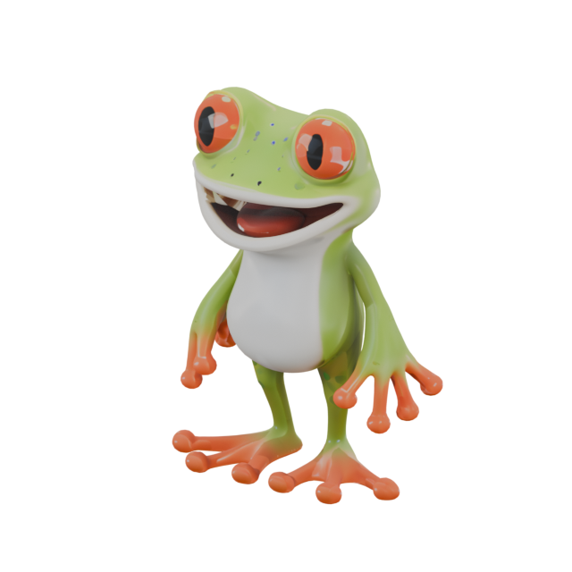

実物のGLBを回す

ドラッグで回転・ホイールで拡大
公開済みの素材と記録を確かめています…
取得と照合（2026-10-24）
- 元データ
- scenario-labs/3d-collection 固定リビジョン
55b4c002b4c1529fc48da3dff98516c3069bfa3f。配布は CC BY 4.0（ライセンス）。 - 選んだ3件
- カエル・宝箱・ランタン。取得した
output.glb・入力PNG・プレビューJPGのSHA-256を、配布メタデータの値と照合し、3件すべて一致しました。 - 範囲
- 収録は1,342件の作例・1,500点の出力ファイルですが、今回確かめたのはこの3件だけです。全件の検証ではありません。
- 生成の有無
- いずれも配布元が公開済みの成果物を取得しただけで、新しい3D生成は実行していません。
Blenderで確かめたこと
- 環境
- Blender 5.2.1 LTS。ファイル内スクリプトの自動実行は無効のまま読み込みました。
- 確かめた値
- メッシュは各1オブジェクト。三角形はカエル34,998・宝箱36,506・ランタン38,155。テクスチャ画像は各1点ずつ埋め込まれています。
- レンダー画像
assets/<key>/render.pngは表示確認用の再レンダリング（照明・カメラ・表示倍率を当サイト用に調整）。GLB本体のバイトは書き換えていません。
このページの表示について
- 3D表示は three.js 0.180.0（MIT）で、取得したGLBをそのまま読み込みます。
- 表示の大きさの正規化・照明・カメラは見た目のための変更で、GLBのバイトは無改変です。
- 寸法の数値はGLBが持つ任意の読み込み座標のもので、実寸の保証ではありません。
- WebGLが使えない環境では、実物のGLBをBlenderでレンダリングした画像を代わりに表示します。
帰属
3D素材：Scenario／scenario-labs/3d-collection・CC BY 4.0。当サイトによる変更はありません（表示の正規化・照明・カメラのみ。バイトは無改変）。別公開のHunyuan版393件はこの収録範囲に含まれません。
範囲と未確認
- 取得・照合・表示したのは3件のみで、1,342件全体の品質検証ではありません。
- 画質の判定や、ゲーム・制作での適性は評価していません。
- 人による表示確認（実機のiOS Safari・VoiceOverなど）は制作担当の別工程で行います。
- 全体の一括取得（約39GB）はしていません。必要なファイルだけを選んで取得する手順が原典のREADMEの想定です。
出典とファイル
- データセット（固定リビジョン）・LICENSE（CC BY 4.0）
- 公開用の記録（samples.json）・照合・検査の要約（runtime-results.json）・素材の出所とハッシュ（asset-sources.json）
assets/<key>/：model.glb（配布のまま）・input.png・preview.jpg・metadata.json・render.png（当サイトの表示用レンダー）- この作例のMIT・Scenario側ライセンスの同梱コピー・three.js MIT